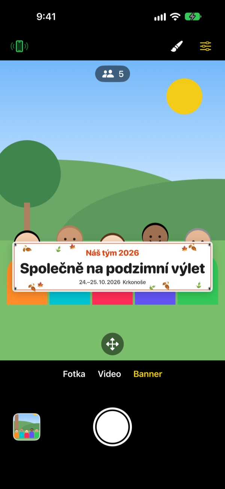
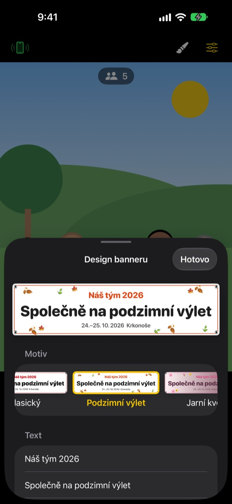

Skupinová fotka s bannerem.
Bez tisknutí banneru.
Napište text, vyberte motiv a banner stojí přímo před skupinou. iPhone kamaráda se jedním naskenováním QR kódu změní v ovladač, takže na fotce je i ten, kdo fotí.
Všechny funkce jsou zdarma. Vyžaduje iOS 17 nebo novější.

Vyrobte si banner
Změňte text a klepněte na motiv. Po stisknutí spouště se stejně jako v aplikaci odpočítají 3 sekundy.
Objednáváte banner kvůli jedné fotce?
Objednáte ho, dotáhnete na výlet a pak nikdo neví, kam s ním. A protože nezbude nikdo, kdo by fotil, někdo vždycky chybí. ShutterLink postaví banner přímo do záběru a z iPhonu kamaráda udělá ovladač, aby na fotce s bannerem byli všichni.
Banner pro vaši akci za minutu
Vyberte si z 13 motivů, například podzimní výlet, jarní květy, silvestrovský večírek, narozeniny, sportovní den, promoce, svatba nebo firemní workshop, a napište až tři řádky vlastního textu.
Změňte pozadí, písmo, ozdoby, barvy a poměr stran a přidejte své logo. Vyberte látku, vinyl nebo papír: látkový banner se prověsí, zvrásní a vlní ve větru jako skutečný.

Ovladač bez instalace, stačí QR kód
Klepněte na tlačítko ovladače vlevo nahoře a objeví se QR kód. Kamarád ho naskenuje běžným Fotoaparátem a ShutterLink Remote se hned otevře jako App Clip a připojí se.
V živém náhledu na ovladači je vidět i banner, takže stačí upravit záběr a stisknout spoušť. Každá fotka hned dorazí do iPhonu s ovladačem, takže ji kamarád bez aplikace může na místě uložit a sdílet.
Tři kroky a můžete fotit
- 1
Postavte iPhone
Otevřete ShutterLink a postavte telefon na stativ nebo poličku.
- 2
Umístěte banner
Dole vyberte Banner, štětcem nastavte text a motiv a klepněte na zem, kde bude skupina stát.
- 3
Zvedněte dlaň
Zvedněte dlaň nebo stiskněte spoušť na ovladači. Samospoušť odpočítá a vyfotí.
Stvořeno pro skupinové fotky
- Gesto dlaní · spoušť tleskáním
- Zvedněte otevřenou dlaň k fotoaparátu nebo jednou hlasitě tleskněte a spustí se samospoušť
- Spoušť úsměvem
- Vyfotí sama, když se všichni usmívají s otevřenýma očima
- Samospoušť 3 · 5 · 10 · 20 · 30 s
- Hlas odpočítává, blesk bliká do rytmu a ovladač vám zavibruje v ruce
- Požádat všechny, ať se dívají do objektivu
- Klepněte a iPhone, který fotí, nahlas zavolá, ať se všichni podívají do objektivu
- Série 3 · 5 snímků
- Vybere nejlepší snímek, kde mají všichni otevřené oči. V galerii ho můžete vyměnit za jiný
- Počet lidí · okraje · vodováha
- Spočítá lidi v záběru, upozorní, když je někdo na okraji, a při naklonění ukáže vodováhu
- Interval 3 s až 1 min
- Zachyťte západ slunce nebo postup práce v pravidelných odstupech
- Ovládání fotoaparátu
- Ostření a expozice klepnutím, korekce expozice, blesk, mřížka, zoom od 0,5x až do 10x podle modelu, přední i zadní fotoaparát, video
- Jednoduchý režim
- Ovladač ukáže jen jedno velké tlačítko spouště, které zvládne každý
- Tlačítka hlasitosti · Ovládání fotoaparátu
- Foťte přímo na iPhonu s fotoaparátem, bez ovladače
V režimu banneru nejsou k dispozici blesk, sériové snímání, zoom ani přední fotoaparát. Samospoušť, spoušť dlaní i ovladač fungují normálně.
Všechny funkce jsou zdarma
Zdarma
- Režim banneru a 13 motivů
- Ovladač bez instalace (App Clip)
- Spoušť dlaní, tleskáním a úsměvem, samospoušť
- Nejlepší snímek, počítání lidí, vodováha
- Video a intervalové snímání
Spropitné (dobrovolné)
- V Nastavení můžete poslat malé, střední nebo velké spropitné
- Spropitné nic neodemyká ani neomezuje
Nejde o předplatné. Platíte jednou, jen když spropitné pošlete.
Bez reklam a bez registrace.
Časté dotazy
Co potřebuji?
Nainstalujte ShutterLink do iPhonu, který bude fotit (iOS 17 nebo novější). Na iPhone s ovladačem nic instalovat nemusíte, internet potřebuje jen při prvním otevření App Clipu. Na obou mějte zapnutý Bluetooth a telefony blízko sebe, obvykle do 10 m.
Naskenuji QR kód, ale App Clip se neotevře.
Zkontrolujte, že je iPhone s ovladačem připojený k internetu. Můžete také v ShutterLink Remote zadat čtyřmístný kód z iPhonu s fotoaparátem a klepnout na Připojit. Ověřte i to, že App Clipy nejsou blokované v Nastavení › Čas u obrazovky › Omezení obsahu a soukromí.
Zasekne se na „Hledání fotoaparátu…“.
ShutterLink musí být otevřený na obrazovce iPhonu, který fotí. Na obou telefonech zkontrolujte, že je Bluetooth zapnutý v Nastavení › Bluetooth. Kód se mění při každém otevření aplikace, takže pokud jste ji otevřeli znovu, použijte nový QR kód nebo kód a klepněte na Zkusit znovu.
Zobrazuje se „Přístup k Bluetooth zamítnut“.
Zapněte ShutterLink v Nastavení › Soukromí a zabezpečení › Bluetooth. Ovladač je App Clip a v seznamu být nemusí. V tom případě znovu naskenujte QR kód a při dotazu klepněte na Povolit.
Živý náhled se seká nebo je rozmazaný.
Živý náhled je záměrně zmenšený, aby prošel přes Bluetooth. Fotky a videa se ukládají v plné kvalitě iPhonu, který fotí. Zdi, lidé nebo velká vzdálenost můžou způsobit sekání, ale spoušť a ostatní ovládání fungují dál.
Kde najdu fotky?
Ve Fotkách na iPhonu, který fotí, a v galerii aplikace. Ovladač dostane taky kopii, ale sám ji neuloží, proto ji uložte nebo sdílejte, než ovladač zavřete. Pokud se do Fotek nic neukládá, povolte ShutterLink v Nastavení › Soukromí a zabezpečení › Fotky.
Videa nemají zvuk.
Zapněte ShutterLink v Nastavení › Soukromí a zabezpečení › Mikrofon.
Můžu připojit víc ovladačů?
Ano. Několik iPhonů se může připojit najednou stejným QR kódem nebo kódem a kterýkoli z nich spouští tentýž fotoaparát.
Při focení se spojení přeruší.
Dokud je ShutterLink otevřený, obrazovka sama nezhasne. Zamknutí telefonu bočním tlačítkem nebo přepnutí do jiné aplikace spojení přeruší, proto mějte aplikaci při focení na obrazovce.
Nahrávají se moje fotky někam?
Ne. Oba iPhony se spojí přímo přes Bluetooth a fotky i videa zůstávají jen v iPhonu, který fotí, a v připojeném ovladači. Funguje to i na horách nebo na pláži bez signálu a nepotřebujete účet.
Nepomohlo to, nebo jste našli chybu? Napište na leeo@kakao.com. Uveďte modely a verze iOS obou iPhonů, ať to můžeme prověřit rychleji.